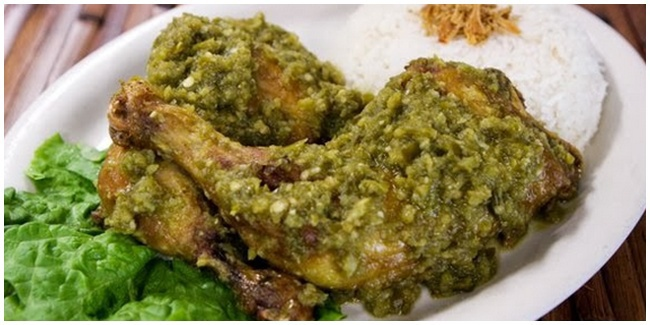

Bosan kan dengan ayam goreng?. Sekali-kali coba dong resep ini, bebek cabe ijo, masakan ini cocok buat yang bosen dengan masakan yang serba ayam. Nah, dicoba masak bebek dengan variasi sambal warna ijo.
Bahan Bahan:
- 1 ekor bebek
- 1 batang serai di geprek
- 10 cm lengkuas di geprek
- secukupnya Garam
- 1 buah jeruk nipis
- Air untuk merebus bebek
Bumbu halus:
- 8 buah bawang merah
- 5 siung bawang putih
- 1 sdt ketumbar halus
- 3 buah kemiri
- 1 sdt merica bubuk
- 1 ruas jari kunyit
Bahan cabe ijo:
- 10 buah cabe ijo
- 3 buah bawang merah
- 1 siung bawang putih
- 1 buah tomat (kalau ada tomat hijau)
- secukupnya Garam
Langkah
- Bebek dipotong menjadi 16 bagian. Lumuri dengan garam dan jeruk nipis, diamkan sebentar.
- Haluskan bumbu. Dicampur bumbu, serai, garam dan lengkuas kedalam bebek, kemudian dimasak sampai bebek empuk. Kalau saya menggunakan panci presto selama 30 menit.
- Setelah empuk digoreng sampai garing.
- Cara membuat cabe ijo. Ulek kasar semua bahan, kemudian ditumis. Tambahkan garam sesuai selera
- Siram bebek dengan sambal cabe ijo, kalau tidak suka siram bisa dicolek dengan sambal.
- Selamat mencoba